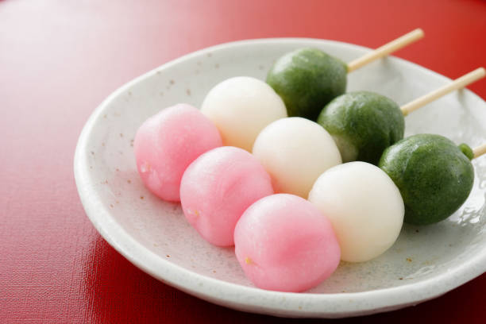
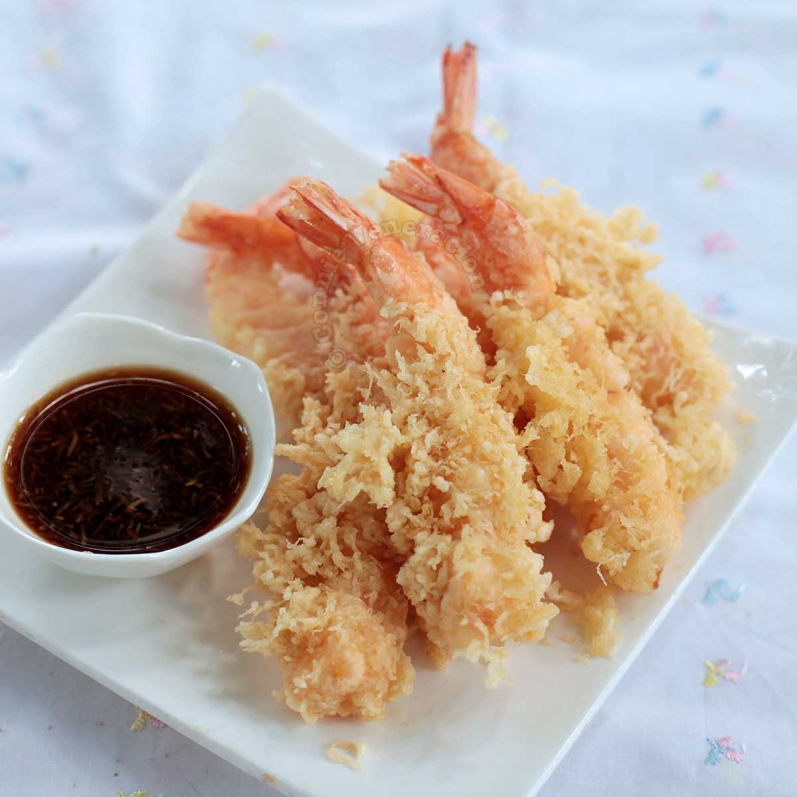

Japan flag

The reason why I want to go to Japan is because, I want to see the food, their culture, I want to try the different stuff that they have.
Types of food in japan
the types of food that I want to try when I go to Japan is dango, Ebi tempura, and onigiri.
|
Dango is a Japanese dumpling made from rice flour mixed with uruchi rice flour and glutinous rice flour.
It is different from the method of making mochi, which is made after steaming glutinous rice. Dango is usually finished round shaped,
three to five dango are often served on a skewer.
 |
Rice balls or "onigiri" are a Japanese food made from white rice formed into triangular or oval shapes and often wrapped in nori
(seaweed). Traditionally, an onigiri is filled with pickled ume(umeboshi), salted salmon, katsuobushi, kombu, tarako, or any other
salty or sour ingredient as a natural preservative.

|
This method of frying food was introduced in the 1600s by Portuguese missionaries. The original dish has disappeared,
but it was a meal meant for Lent, when many Christian denominations are forbidden to eat meat.
In fact, the name tempura comes from the Latin ad tempora cuaresme, which means 'in the time of Lent.
 |